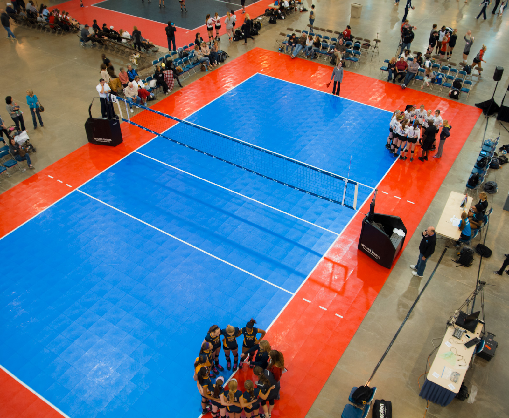
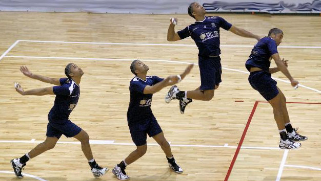
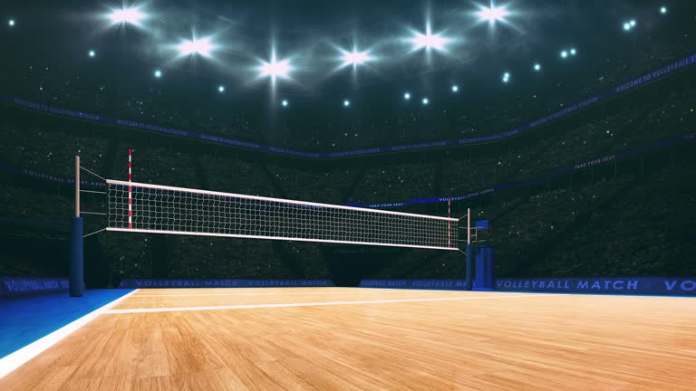
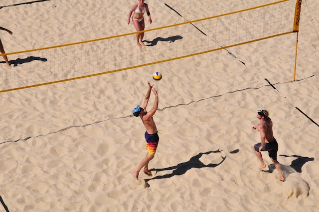
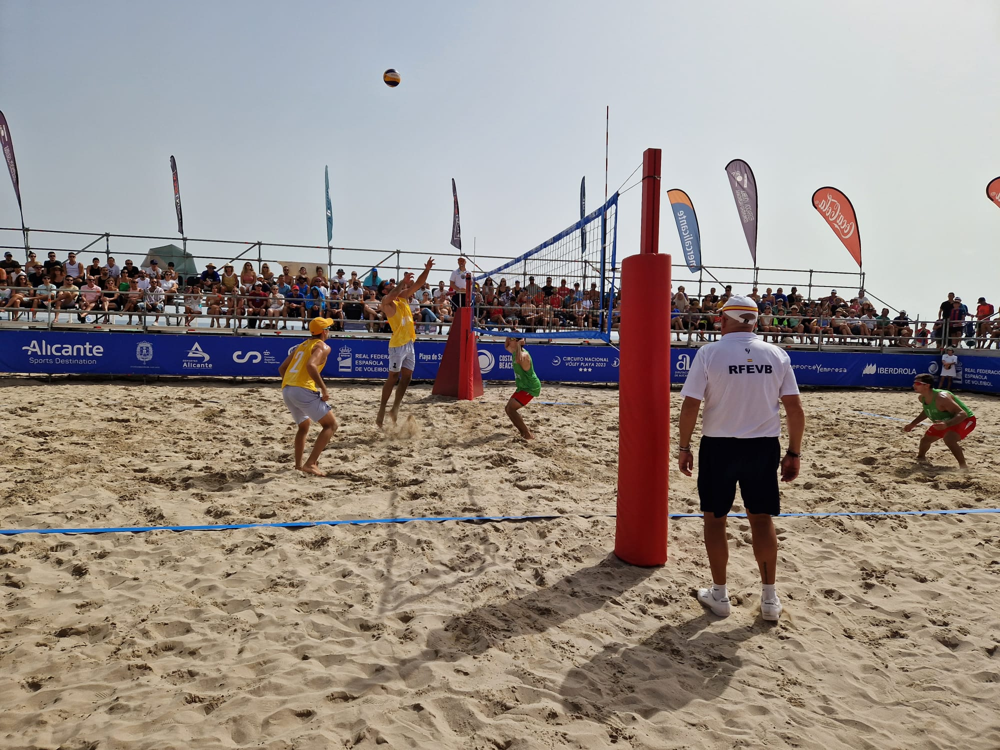

Reglas del Voleibol
El voleibol tradicional (o voleibol de cancha) tiene un conjunto de reglas establecidas por la Federación Internacional de Voleibol (FIVB) que regulan cómo se debe jugar. A continuación te presento un resumen de las reglas principales:
Composición del equipo

- Cada equipo tiene seis jugadores en la cancha.
- Los jugadores se colocan en dos filas: tres en la zona delantera (cerca de la red) y tres en la zona trasera.
- Puede haber jugadores suplentes y un jugador especial llamado líbero, que tiene funciones defensivas y lleva un uniforme diferente.
El balón

El balón es esférico, con una circunferencia de 65-67 cm y un peso de 260-280 gramos. Está hecho de cuero o material sintético y debe tener buena elasticidad.
Algunas marcas populares que fabrican balones de voleibol aprobados por la FIVB son:
- Mikasa (como el modelo V200W para cancha y VLS300 para playa).
- Molten (muy usado en competiciones de alto nivel).
Toques permitidos

Cada equipo tiene un máximo de tres toques consecutivos para devolver el balón al lado contrario. Esto fomenta el trabajo en equipo, ya que rara vez un solo jugador puede controlar, preparar y devolver el balón. El objetivo de estos tres toques es coordinar una estrategia: recepción, colocación y ataque
Excepción al límite: Un bloqueo no cuenta como uno de los tres toques. Si el equipo bloquea un ataque rival y el balón permanece en juego, aún dispone de hasta tres toques más para organizar su jugada.
Puntuación

El sistema de puntuación es el Rally Point System: Esto significa que se gana un punto en cada jugada, independientemente de quién tenga el saque. Se otorga un punto al equipo que logre que el balón toque el suelo del lado contrario o si el equipo rival comete una infracción (como tocar la red o hacer un pase ilegal).
Medidas de la cancha
- Dimensiones del campo:
- 18 metros de largo por 9 metros de ancho.
- Zona de ataque:
- 3 En cada lado del campo, hay una línea de ataque ubicada a 3 metros de la red. Esta área separa a los jugadores delanteros de los defensivos.
- Zona de servicio:
- El saque se realiza desde cualquier punto detrás de la línea de fondo, que está al extremo del campo.
Rotación

Cuando un equipo gana el derecho a sacar tras anotar un punto, todos los jugadores giran sus posiciones en sentido de las agujas del reloj. Por ejemplo:
- El jugador de la posición 2 pasa a la posición 1 (para sacar).
- El jugador de la posición 1 pasa a la posición 6.
- Y así sucesivamente.
Esta rotación asegura que todos los jugadores participen en diferentes roles ofensivos y defensivos durante el partido.
Saque
El saque debe realizarse desde detrás de la línea de fondo sin pisarla. Hay varias técnicas de saque, como:
- Saque por abajo:
- Generalmente utilizado por principiantes. Consiste en golpear el balón desde abajo con la palma de la mano.
- Saque por arriba:
- Es más común y efectivo. El jugador lanza el balón al aire y lo golpea con fuerza para enviarlo al campo contrario.
- Una técnica avanzada donde el jugador salta y golpea el balón en el aire para darle mayor potencia y precisión.
Si el saque toca la red pero cruza y cae dentro del campo contrario, es válido (dependiendo del reglamento del torneo).
Red y bloqueo
La red tiene una altura de 2.43 metros para hombres y 2.24 metros para mujeres. Los equipos pueden realizar bloqueos para detener el ataque del equipo contrario, pero deben cumplir con estas reglas:
- No tocar la red con ninguna parte del cuerpo.
- No invadir el campo contrario ni obstruir el espacio del oponente de manera ilegal.
- El bloqueo cuenta como uno de los tres toques si el balón queda en juego después de ser bloqueado.
Reglas de volley-playa
El voleibol de playa también está regulado por la Federación Internacional de Voleibol (FIVB) y tiene un conjunto de reglas adaptadas a las particularidades de este deporte. A continuación, un resumen de sus principales reglas:
Terreno de juego
El terreno está compuesto de arena fina, generalmente de playa, aunque en competiciones oficiales se utiliza arena especialmente seleccionada para garantizar comodidad y seguridad.
La arena debe estar libre de objetos peligrosos como piedras, conchas o cualquier elemento que pueda causar lesiones a los jugadores.
Además, debe ser suficientemente profunda para amortiguar los movimientos pero no tan blanda como para dificultar el desplazamiento. Por lo general, la profundidad mínima de la arena es de 40 cm.
Cantidad de jugadores
En voleibol de playa, cada equipo tiene dos jugadores.
A diferencia del voleibol de cancha, no hay suplentes, lo que significa que los dos jugadores deben cubrir todo el campo y realizar todas las funciones del juego: atacar, defender, bloquear y recibir.
No existen posiciones fijas en el terreno de juego, y ambos jugadores suelen tener funciones específicas dependiendo de su especialidad. Por ejemplo, uno puede enfocarse más en los bloqueos en la red, mientras que el otro se especializa en la defensa en el fondo de la cancha.